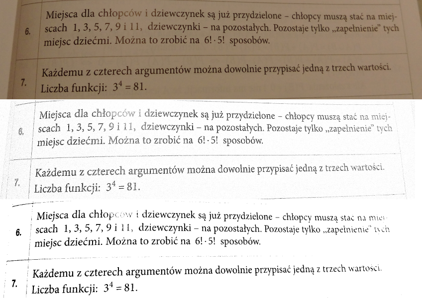
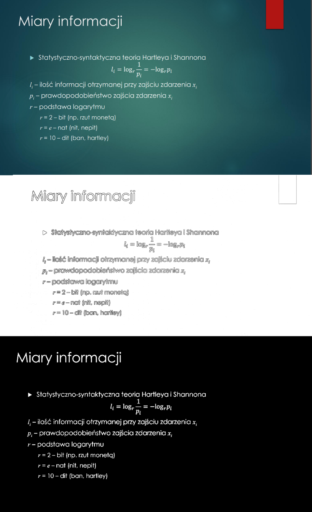

Image copy finder
Description:
Image copy finder attempts to find copies of images in folders selected by the user. After initial scan
if any pairs of similar-looking images are found, they are displayed to the user. User can then decide for each pair
to move one of the images into user-selected "delete" folder or ignore that pair.
Important tip:
If you compare a large amount of images it might not only take a long time, but also a lot of memory space.
The application might not crash, but the thread that compares images will be probably killed, resulting in no progress
at all.
If you fear that it might happen, select lower size of compared image (for example less than 64)
Syntax:
Simple queries:
Put each folder into different line:
C:\example folder
C:\example folder2
Recursive queries:
Put a plus sign before folder which you want to open recursively:
+C:\example folder
C:\example folder2
"example folder" will be opened recursively. All folders found recursively are considered to be the same as parent
folder during comparison (they belong in the same group).
Local queries
If contents of one folder should be compared only locally (within this group), put at "L" the start of the line:
L +C:\example folder
L C:\example folder2
Contents of "example folder" will not be compared with contents of "example folder2".
Global queries
If contents of one folder should be compared only globally (with files from outside this group), put "G" at the
start of the line:
G +C:\example folder
G C:\example folder2
L +C:\example folder3
Contents of "example folder" will be compared with contents of "example folder2" but not "example folder3". Contents
of "example folder" and "example folder2" will not be compared locally.
Join groups
If you want for a list of folders to behave like a one folder put "JOIN (" at the start of the group and ")" at the
end:
JOIN (
+C:\example folder
C:\example folder2
)
Both operators need to be the only things in their line. Folders inside of group cannot have local or global
modifiers.
Joined folders behave like a single folder. Local or global modifier can be placed before "JOIN (":
C:\example folder3
G JOIN (
+C:\example folder
+C:\example folder2
)
Contents of "example folder3" will be compared with contents of "example folder" and "example folder2" as if the
latter were a single folder.
How it works:
Image copy finder (ICF) works in two phases:
- Finding and preparing images
During this phase ICF looks for images in given folders. It scales down all of the found images, blurs them, and
keeps them in memory.
Blurring allows for elimination of artifacts caused by compression.
- Comparing images
All of the processed images are compared with each other on pixel-by-pixel basis. If they are similar enough,
they
are added as a pair to list containing similar images.
After completing those two phases list of pairs of images is displayed to the user.
Scan-processing
Description:
This module contains filters created to make printed images cleaner, no matter whether they come from image or from presentation, or from a book.
Filters can be used on either a single image or on .pdf file.
Currently there are two modules: high-pass-filter and quantization.
High pass filter works by dividing the original image by the blurred version of it.
Quantization is based on
mzucker.github.io/2016/09/20/noteshrink.html
Both provide varying results depending on the input and the settings.
In simple cases quantization method is better, although it is slower.
Comparison: (original/highpass/quantization)


Image compression
Description:
Image compression uses my custom lossy compression algorithm to compress images. It uses a combination of chroma
subsampling, dictionary compression and RLE compression. Additional improvements are planned.
Do not use it for serious storage currently - it is too slow and sometimes the files are damaged
File structure:
Best way to describe algorithm is to describe its file structure (somewhat outdated currently):
- Header
Header contains information about:
- Algorithm name
- Version that this file was compressed with
- Last version that can decode this file
- Flags (currently unused)
- Width
- Height
- Block size - image is divided into blocks of this size
- Blocks:
Each block describes Y, Cb or Cr layer in YCbCr color space.
Each block contains information about:
- Dictionary
Dictionary is generated using K-Means algorithm and Y and CbCr weights provided by user. Contains:
- Dictionary size
- Y/Cb/Cr values ordered by ID
- Compressed lines
Each of the lines is compressed using one of the compression algorithms:
- RLE
RLE handles simple cases where only one or two colors are used and they exists simple way to describe
them.
- Differential
Differential handles most cases. If value is the same as the last value, only "REPEAT" information is
encoded.
- Simple
Simple handles basic cases, where only two values are present. In those cases using differential method
would always lead to increase in compressed file size.